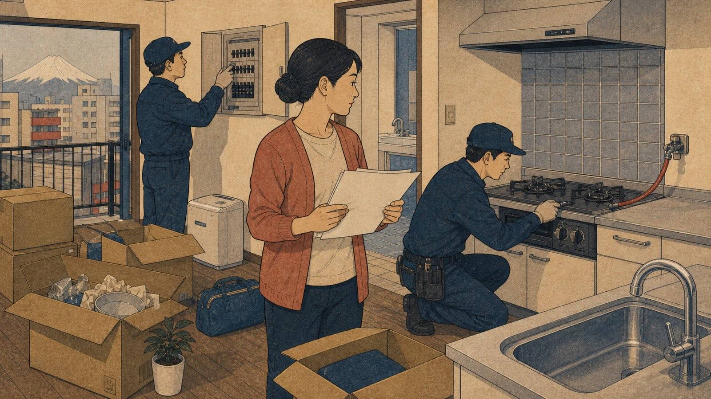

Mudar de casa no Japão exige mais do que assinar contrato e carregar caixas. Eletricidade, gás e água podem envolver fornecedores diferentes, prazos distintos e procedimentos que mudam por cidade, prédio e tipo de contrato.

Eletricidade
Em muitas regiões, a eletricidade pode ser solicitada online antes da mudança, informando endereço, data de início, nome do morador e forma de pagamento. Desde a liberalização do setor, há fornecedores variados; prédio, imobiliária ou contrato podem indicar opções disponíveis.
Não esqueça o endereço antigo. Encerrar o fornecimento anterior evita cobrança depois da saída. Tire foto do medidor quando fizer sentido e guarde confirmação de encerramento.
Gás
O gás pede atenção especial porque a abertura costuma exigir presença para teste de segurança, principalmente em gás urbano. Marque com antecedência e confirme se o imóvel usa gás encanado ou botijão, pois procedimentos e empresas mudam.
Antes de comprar fogão, verifique o tipo de gás. Aparelho incompatível pode ser perigoso e não deve ser improvisado.
Água
A água geralmente é administrada por prefeitura, bureau local ou empresa regional. Em Tóquio, por exemplo, há canais próprios do Bureau of Waterworks. Em outras cidades, a solicitação pode estar no site municipal, por telefone ou formulário.
Condomínios e imóveis administrados podem incluir água em taxa comum ou exigir procedimento via imobiliária. Confirme antes de assumir que o fluxo é nacional.
Aviso de atualização
Texto revisado em 10 de agosto de 2026. Fornecedores, formulários, idiomas disponíveis e prazos variam por município, região e edifício. Confirme com imobiliária, contrato e companhia local.
Fontes consultadas
- TEPCO: official English site
- Tokyo Gas: official English site
- Tokyo Metropolitan Government Bureau of Waterworks